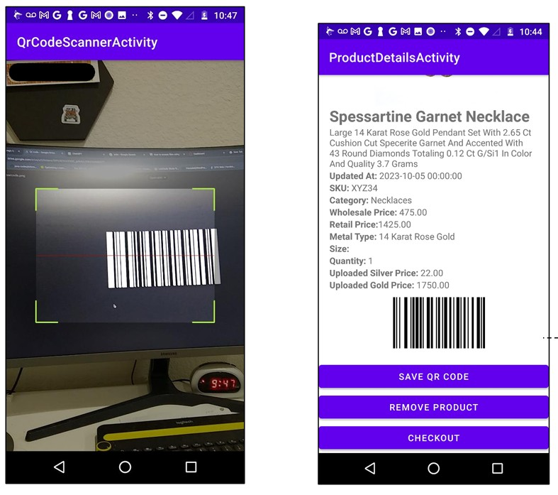

Jewelry store staff were struggling with outdated tracking methods — paper logs and Excel files led to slow
searches, frequent errors, and missed updates. There was a clear need for a digital transformation.
The underlying goal is to create a seamless and admin friendly experience that empowers jewelry businesses
to gain full control over their inventory management processes.
The Solution: A QR-Enabled Inventory Assistant
My Contribution
A Use Case Diagram visually represents system interactions, showing how users engage with key functionalities for product management.
This Matrix maps system requirements to corresponding use cases, ensuring alignment between functional needs and implemented scenarios.
A Sequence Diagram illustrates the flow of interactions between system components over time, detailing the sequence of messages exchanged to achieve a process.
A Domain Diagram visually represents the key entities, relationships, and structure within a specific problem domain, helping to define system boundaries and interactions.
My team and I initiated the idea for a mobile-friendly system where admins can create product entries, but I spearheaded the integration of QR codes for seamless tracking. I also took charge of documentation, team communication, weekly updates, use cases, sequence diagrams, domain analysis, and overall project coordination.
The application pulls live data from an industry vendor, stores it in the database, and provides real-time tracking, detailed product storage, and comprehensive sales reporting. Additional features like QR generation and search tools enhance speed, accuracy, and user confidence.
System Walkthrough (Slideshow)
Admin fills in product details and clicks “Add Product.”
Admin views product list and checks out by selecting quantity.
System generates a unique QR code with encoded details.

Admin scans the QR using mobile to fetch product data instantly.
The app filters and retrieves matching products from the database.
System validates data and generates detailed sales reports.